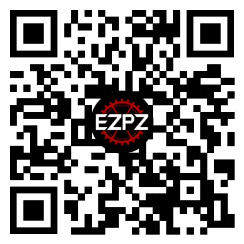

VEX Robotics: Spin Up
Vex is a head to head competition where teams compete with two robots to score more points than the other team. Teams design, build, program and drive the robots. Each year a different challenge is presented.
Gamecock Robotics was founded in 2021 as the robotics team for the University of South Carolina. The team has 11 members and 1 faculty advisor.
Join our Discord!
If you are interested in learning more about our club, joining our club, or just joining a community of people passionate about robotics, join our discord. Our discord has all of our important announcements, meeting times and discussions about robot designs.
